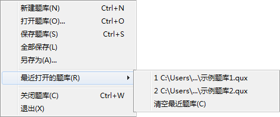
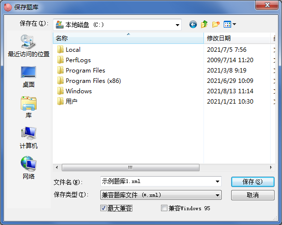

“文件”菜单
“文件”菜单

“文件”菜单的相关说明如下：
新建一个空白题库，并显示在主界面中。
打开可被QuickQuiz识别的题库文件。QuickQuiz支持的文件格式见表1。
表2 QuickQuiz 2.0支持的文件格式
| 扩展名 | 类型描述 | 说明 |
|---|
| *.qux | 标准题库文件 | QuickQuiz 2.0及更新版本应用程序的默认题库文件格式，适配最新应用程序的全部功能，在大部分情况下推荐保存为此格式， |
| *.quiz | 适用于1.x版本的题库文件 | QuickQuiz 1.x版本应用程序的默认题库文件格式，无法适配2.0版本新增功能。 |
*.xml
*.qxml
*.txt | 兼容题库文件 | 按QuickQuiz的标准保存为XML格式的题库文件，可被任何版本QuickQuiz读取，本格式也适用于简易网页版。 |
*.jpeg
*.jpg | 带封面的标准/兼容题库文件 | 带有jpeg图片文件头的标准/兼容题库文件，除jpeg文件头外其余内容与标准/兼容题库文件完全相同，本格式也适用于简易网页版。 | 不是所有的jpeg/jpg文件都是带封面的标准/兼容题库文件，这里指的是利用QuickQuiz生成的题库文件，或者您自行给标准/兼容题库文件添加jpeg文件头后制作出的题库文件。更多说明详见题库封面 |
|---|
|
将当前选中的题库保存至硬盘。若为新建题库，则保存时需选择保存路径及保存格式；若题库文件曾经编辑过，则不作询问，直接保存至原路径且存为原格式，若需要更改格式，请执行“另存为”。

当勾选“最大兼容”时，生成的兼容题库文件可以被所有版本的应用程序读取，但文件可能较大；当不勾选“最大兼容”时，生成的兼容题库文件用1.x版应用程序读取时可能无法完整读取（但已读取的内容可以正常使用），在保存时，默认不勾选。此选项不影响标准题库文件的存储。
将当前所有打开的题库保存至硬盘，存储规则与“保存题库”相同。
| 采用此种方法保存，无论保存成功或失败均无提示。 |
|---|
将当前选中的题库保存至其他位置或其它格式，支持保存为
表1所列所有格式。
此菜单保存了最近打开的8个题库，点击对应文件名菜单项可以快速打开，您也可以利用“清空最近题库”来清除这些记录。
关闭当前选中的题库，若题库编辑过，则提示保存。
关闭全部已打开的题库，并退出应用程序。
GX Software 2020-2021
V2.0